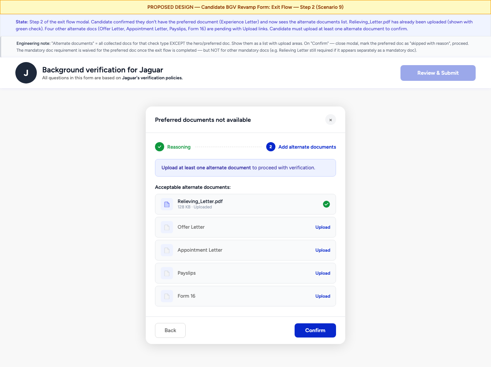

Exit Flow — "I don't have preferred documents"
Triggered when a candidate clicks "I don't have preferred documents" or "I don't have this document" on any section. A 2-step modal guides them through providing a reason and selecting alternate documents. This flow applies to Identity, Address, and Education sections.

Scenario 8
Exit Flow — Step 1: Reasoning
Modal with stepper (Step 1 active). Reason dropdown (required), detail textarea (optional), ETA date picker (optional, shows past-date validation error).

Scenario 9
Exit Flow — Step 2: Alternate Docs
Modal Step 2 — lists alternate documents the candidate can upload instead. One document already uploaded. "Submit" button at the bottom.